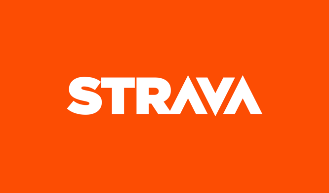
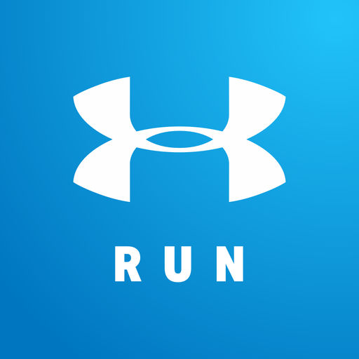
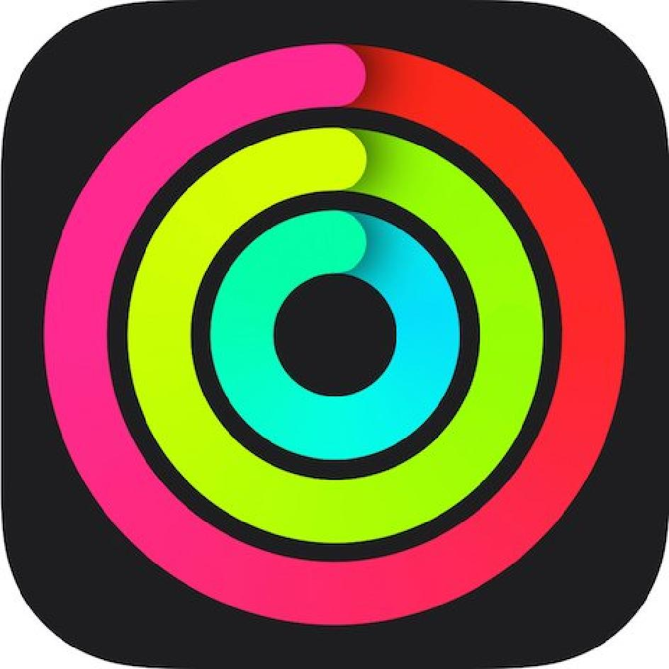
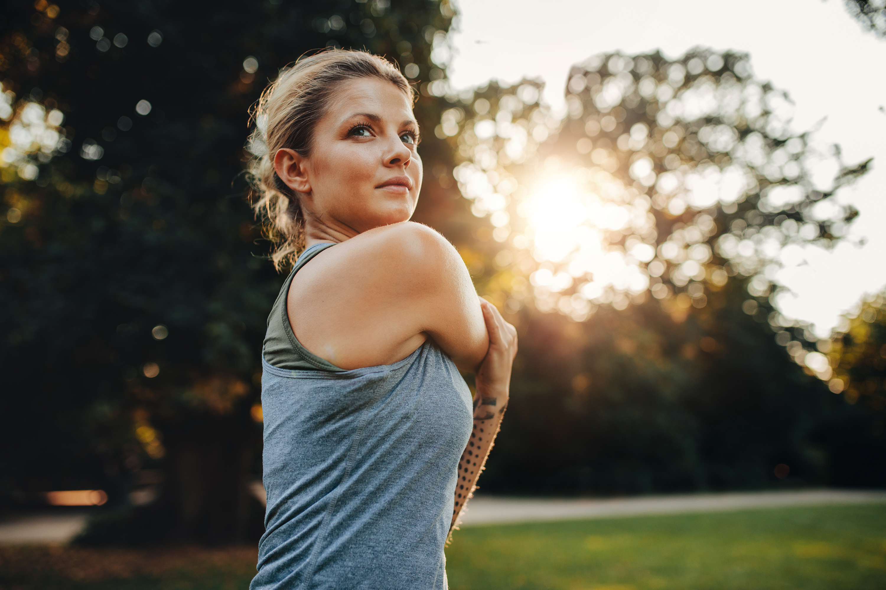
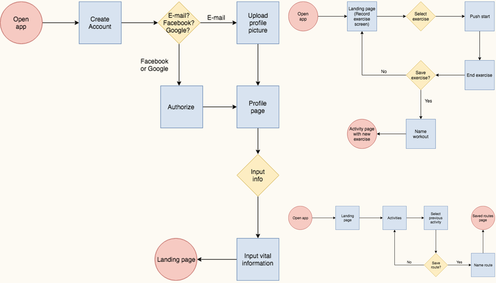
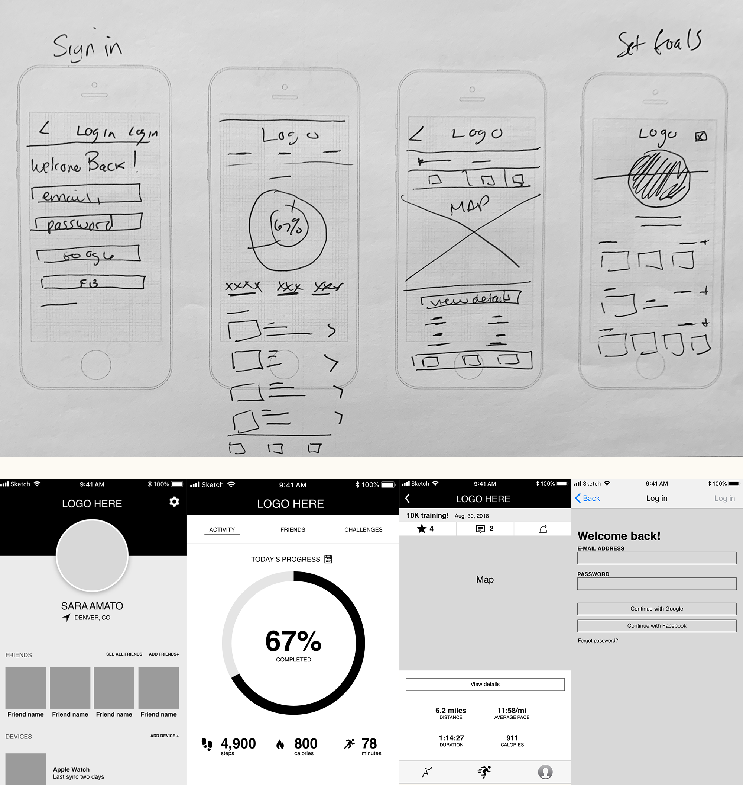
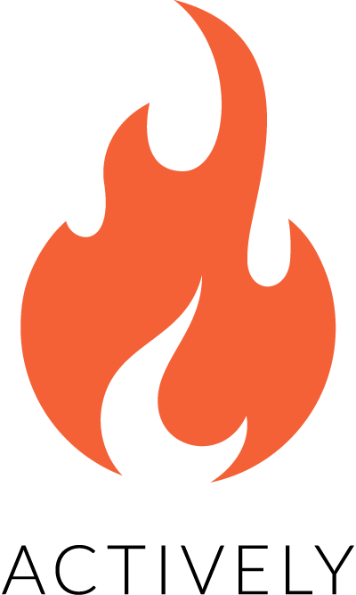
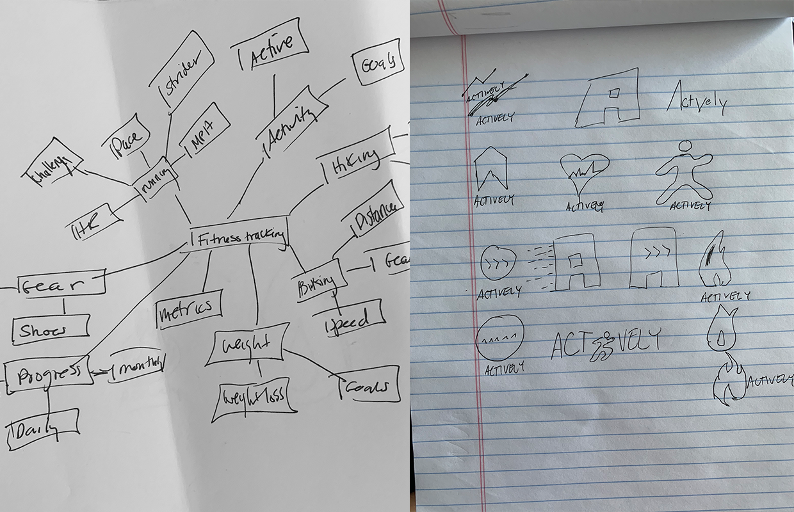

CASE STUDY
Exercise tracking made easy
Tracking activity can be a helpful motivation. But as new apps enter the market with different capabilities, people tend to gravitate toward the one that they get the most out of. Actively is a fitness app that helps people stay motivated by tracking various exercise, connecting you with friends and strangers, breaking down stats and giving a fitness overview based on goals.
View prototypeView website
Roles
UX Design
Visual Design
Branding and research
Deliverables
User Surveys
Competitive Analysis
Personas
User stories and flows
Branding style guide
Wireframes
Prototypes
User Testing
Mockups
Tools
Pen/paper
Adobe CC
Sketch
Figma
Invision
Usability Hub
Draw.io
PROBLEM
More comprehensive tracking
Each fitness tracker offers different things. Some offer tracking for one exercise, while others offer tracking for multiple. Some offer all-day tracking and device syncs. But while some things work in some apps, it would be helpful to have a more comprehensive app for people who want to track their fitness.
SOLUTION
Easy to use to get moving
Actively is focused on getting people moving. It combines aspects of some fitness tracking apps such as friends, comments, challenges, route-saving and live GPS tracker along with some basic fitness tracking apps that can track goals such as steps, calorie burn and exercise minutes. It’s easy to navigate so people of all fitness levels can use with ease.
USER SURVEY
What do users want?
I wanted to gauge how people use fitness tracking apps. Not wearables, but apps that measure walking, hiking, biking, running and so on. I originally headed into this project hoping to create a running app. But I left the survey open to people who do more than run. It turns out people who even run a majority of the days of the week want MORE exercises in their app. So the app becomes more than just running and walking.
Do users run?
A majority of responses said they don't run. Which means they don't need an app specifically for tracking runs. This response changed the scope from a running app to a fitness app.
If they ran, did they track it with an app?
Yes. Those of who responded to the survey that they run all said they track their runs with an app. But they were all split about what makes their app good and what it needs to improve.
What do people who just exercise do?
I made the survey conditional and 50 percent of the people who said they don't run said they do track their exercises using an app. The needs and wants were similar to those who ran.
What's the competition like?
As my knowledge grew about what users were looking for, I took a deep dive into the competition. I focused on Strava, MapMyRun and Apple’s activity app. Each app offered something different, but each app really exceled in what they were offering.
View competitive analysis
STRAVA

Strengths
- Strong route building
- Clean interface
- Most fitness trackers such as fitbit can upload to Strava, even if you don’t use the app.
- Good social sharing / feed with friends
- Allows for hiking, biking and running in the same app.
- Strava Summit -- premium packs that allow you to pick what you want. Starts at $2/mo
- Has options for indoor exercises as well.
- Has challenges and leaderboards for users.
Weaknesses
- Spotty GPS
- Overestimating calorie burn
- Saving/loading routes has to be done on their website, not the app.
- Some data features such as heart rate are only available with paid subscription.
- It had very public issues with privacy settings.
Opportunities
- More options to link other exercise apps to their app, such as Nike Run Club.
- More exercises available other than running, hiking and biking.
- Allow for more options for voice command.
Threats
- Apps are emerging that have more exercises users can log.
- There’s a lot of fitness tracking apps on the market.
MAPMYRUN

Strengths
- Owned by Under Armour, a very well-known brand.
- One of the more used, trusted apps.
- Training coach under the premium MVP plan
- You can pay month to month (5.99/mo) or full year ($29.99/year)
- Syncs with Under Armour shoes
- Allows other devices such as Apple Watch, Garmin, and Fitbit to sync.
- Saves a list of user-created routes all across the country.
Weaknesses
- There are several apps for each exercise. While they all sync together, it’s a lot of extra apps that are unnecessary.
- Lackluster community
- The free version has a LOT of ads causing frustrating navigation through the app.
- A lot of the really well-reviewed features are only available on the paid version.
Opportunities
- Consider better integration between all the Map My apps.
- Minimize the way the ads integrate with the ad-supported free version.
- Increase visibility within the community.
Threats
- Apps that offer free versions with less intrusive ads.
- Apps that have free versions with more features before needing to upgrade.
- A bigger community within other apps.
APPLE ACTIVITY

Strengths
- A lot of exercises to pick from, including swimming.
- Free with the Apple Watch.
- Offers challenges
- Notifications push users to spend more time standings or getting more active. It also charts your heart rate so if your heart rate gets too high, it lets you know.
- Visually appealing.
- Keeps a record of your activity even if you don’t launch an exercise.
- Counts steps, hours stood, calories and exercise hours.
- Can share with other users.
Weaknesses
- Only compatible with iOS/Apple Watch.
- A lot of notifications.
Opportunities
- Open the app itself up to other fitness wearables.
- Create a way to separate steps/move/exercise based on exercise only and not all the hours you wear the watch.
Threats
- Hinges on popularity of Apple
- Other more advanced fitness trackers such as FitBit and Garmin, which are not iOS specific.
User Personas
I took another look at the results from the user survey and noted what the competition offers and doesn't and I was able to settle on three user personas: The Expert, The Moderate and the Newbie. I wanted to be able to target a multitude of people without straying away from the ultimate goal of building an easy to use fitness tracker.
View user personas

Rachel
Goals
- To be able to keep a detailed log of all her exercises.
- To have a good community within the app to help motiviation.
- Measuring and analyzing workouts
Frustrations
- Pricing
- Spotty GPS
- Not enough exercise options
Ben
Goals
- Wants detailed activity reports
- Would love to see other routes other uses have rode.
- Motivation
Frustrations
- Pricing
- Forgets routes sometimes
- Wants more fitness focused versus biking focused
Cynthia
Goals
- To stay active
- To have people and friends to walk and jog with.
- Easy to use
- Avoiding injury and staying healthy
Frustrations
- Too complicated
- Too many options
- Not enough community
User flows
I created user flows based on several user stories. I took a look at the high priority user stories and created flows for those, as those flows would be the most important to the app.
View user flows

Wireframes
In previous projects, I felt as if I had rushed through the sketching process for my wireframes. This time around I was deliberate. I wanted to make sure things worked. I know that wireframes change. The Actively app did change based on logistics and user testing. But I was careful in the original process to try and get things close to how they would end up, with some flexibility of course.
View wireframes

Branding
Defining what the app would be was probably the hardest part of this project. I struggled to find a name and even come up with a logo (the original flame was too close to the Tinder logo). The name came by chance. I was mindmapping and getting a little frustrated when I told someone that I was just sitting there, actively trying to come up with a name for my fitness app. The word actively stuck with me. The whole point of this app is to get people active, to get them actively conscious of the lifestyle choices they are making. The name made sense and it stuck.
View branding

Color scheme
#4A4A4A
#F46036
#F5D547

High Fidelity mockups
I created high fidelity prototypes of my design that aligned with the brand styles I created. I made adjustments to the style guide and my wireframes as I went along based on what worked and what didn’t during the usability testing.
View mockups


Conclusion + what I learned
I was honestly surprised I ended up making a fitness tracker. I went into it hoping to make a very focused running app. I had been running a lot and was getting by the different apps that I was using to track my runs. But when I took my survey to the people, their answers surprised me. It changed the scope of my project, and it did so without complaint from me. There are so many things I like about specific apps, and having all the great things from each app in one singular app could be really useful.
As this was my second project, I was a little more aware of how users would and should interact with designs. But with that being said, I still missed a lot of things that the users found in tests. I need to reiterate this again, but users are really good at finding holes in designs. One of the things I noticed in the responses to the survey, was this sense of community that people who run or hike or bike want to feel. It was low on my user stories, and I included it in the prototype -- although it wasn’t clickable -- but I included sort of a challenges tab.
With more time I would have liked to develop that -- where users can challenge each other and there are monthly challenges for all users. Motivating each other and yourself is such a big part of the app.